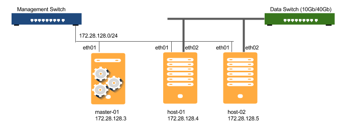

Prepare your system (Setup Guide)¶
Getting started¶
This quick start guide helps you to setup a simple OpenEBS Cluster with three machines, VMs or Servers. OpenEBS is both a scale-out and scale-up solution. The OpenEBS cluster created using this guide can be taken into production and can be scaled later, to meet changing storage demands, by adding additional machines to the cluster.
The clients (docker-hosts) can be configured to consume the OpenEBS storage either via Network(iSCSI) or using TCMU. This guide will show connecting to storage using iSCSI.
In this guide, we will setup an simple OpenEBS cluster with three machines:
master-01 used as OpenEBS Maya Master (omm) and host-01 and host-02 used as OpenEBS Storage Host (osh).
If you plan to setup using VMs on Virtual Box, you can skip down to the section of Preparing machines using Vagrant below.
Prepare your machines for OpenEBS installation¶
Since OpenEBS is delivered through containers, the OpenEBS hosts can be run on any operating system with container engine. This guide will use Ubuntu 16.04 and docker.
Prepare Software¶
OpenEBS is a software-only solution that can be installed using the released binaries or built and installed directly from source. In this guide we will Ubuntu 16.04 as the underlying operating system.
To download and install, you will require wget and unzip to be present on the operating system.:
sudo apt-get update
sudo apt-get install -y wget unzip
Prepare Network¶
ypically, the storage is accessed via a different network (with high bandwidth 10G or 40G et.,) than management on 1G. You will need to identify the IP address on which the management traffic flows and the interface that is used for data.
It is possible that same interface can be used for both management and data.:
ubuntu@host-01:~$ ip addr show
1: lo: <LOOPBACK,UP,LOWER_UP> mtu 65536 qdisc noqueue state UNKNOWN group default qlen 1
link/loopback 00:00:00:00:00:00 brd 00:00:00:00:00:00
inet 127.0.0.1/8 scope host lo
valid_lft forever preferred_lft forever
inet6 ::1/128 scope host
valid_lft forever preferred_lft forever
2: enp0s3: <BROADCAST,MULTICAST,UP,LOWER_UP> mtu 1500 qdisc pfifo_fast state UP group default qlen 1000
link/ether 02:d8:e4:47:7a:33 brd ff:ff:ff:ff:ff:ff
inet 10.0.2.15/24 brd 10.0.2.255 scope global enp0s3
valid_lft forever preferred_lft forever
inet6 fe80::d8:e4ff:fe47:7a33/64 scope link
valid_lft forever preferred_lft forever
3: enp0s8: <BROADCAST,MULTICAST,UP,LOWER_UP> mtu 1500 qdisc pfifo_fast state UP group default qlen 1000
link/ether 08:00:27:9a:7e:b0 brd ff:ff:ff:ff:ff:ff
inet 172.28.128.9/24 brd 172.28.128.255 scope global enp0s8
valid_lft forever preferred_lft forever
inet6 fe80::a00:27ff:fe9a:7eb0/64 scope link
valid_lft forever preferred_lft forever
ubuntu@host-01:~$
For example, we will be using the interface enp0s8 and subnet 172.28.128.0/24 for both management and data in this guide.
Prepare Disk Storage¶
You can use maya to manage the local and remote disks. Optionally create RAID and filesystem layer ontop of the raw disks, etc.,
In this guide for sake of simplicity, we will use the following directory /opt/openebs/. Ensure that the directory is writeable. Note that you add new replication stores at runtime and attach to VSMs. So when you move this node into production, you can move the content from local directories to local/remote disk based storage.:
sudo mkdir -p /opt/openebs
sudo chown -R <docker-user> /opt/openebs
Setup Vagrant VMs for OpenEBS installation.¶
The Vagrantfile is available from github reporsitory. You can either copy/download the Vagrantfile or clone the code to your box. Ensure that you have VirtualBox 5.0.24 and above, Vagrant 1.9.0 and above.
The instructions for setting up using cloned code are as follows:
git clone https://github.com/openebs/maya.git
cd maya/demo
vagrant up